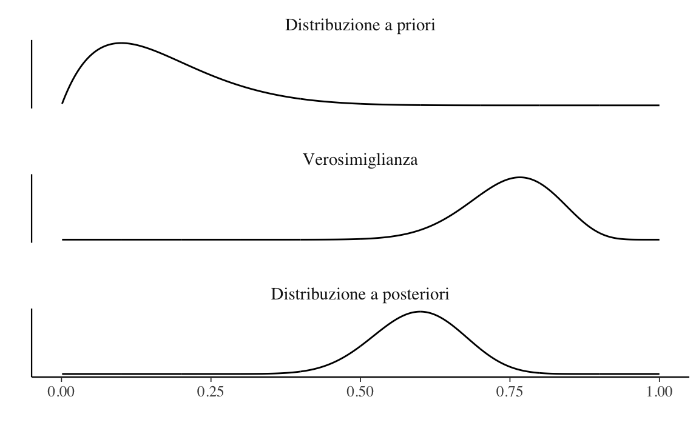
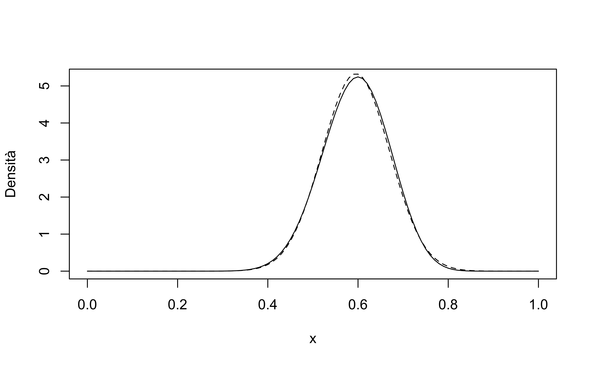

2.2 Simulazione della distribuzione predittiva a posteriori
In situazioni dove è difficile derivare l’esatta distribuzione predittiva a posteriori è possibile simulare valori estratti da tale distribuzione. Consideriamo un esempio riferito all’esempio che stiamo discutendo. È possibile implementare una simulazione predittiva estraendo prima i valori del parametro (in questo caso, \(\theta\)) dalla distribuzione a posteriori. Con i valori del parametro così determinati, poi, si possono generare i valori delle possibili osservazioni future (nel caso presente, usando la distribuzione binomiale).
Per l’esempio che stiamo discutendo, la distribuzione a posteriori è una Beta(25, 17). Estaiamo 100,000 valori da tale distribuzione:
set.seed(12345)
a <- 2
b <- 10
n <- 30
y <- 23
pred_p_sim <- rbeta(1e5, a + y, b + n - y)
pred_y_sim <- rbinom(1e5, n, pred_p_sim)ppd <- table(pred_y_sim) / 1e5
ppd
#> pred_y_sim
#> 3 4 5 6 7 8 9 10 11 12
#> 0.00002 0.00004 0.00011 0.00036 0.00096 0.00241 0.00533 0.01000 0.01753 0.02882
#> 13 14 15 16 17 18 19 20 21 22
#> 0.04290 0.06110 0.07812 0.09476 0.10763 0.11311 0.10821 0.09765 0.07982 0.06185
#> 23 24 25 26 27 28 29 30
#> 0.04156 0.02536 0.01299 0.00630 0.00224 0.00064 0.00016 0.00002LearnBayes::discint(cbind(3:30, ppd), 0.89)
#> $prob
#> 12
#> 0.91553
#>
#> $set
#> 12 13 14 15 16 17 18 19 20 21 22 23
#> 12 13 14 15 16 17 18 19 20 21 22 23Confrontiamo i valori prodotti dalla simulazione con i valori esatti della distribuzione predittiva a posteriori:
prob30 <- extraDistr::dbbinom(0:30, 30, 25, 17)LearnBayes::discint(cbind(0:30, prob30), 0.89)
#> $prob
#> [1] 0.9152885
#>
#> $set
#> [1] 12 13 14 15 16 17 18 19 20 21 22 23La distribuzione predittiva a posteriori esatta è
tibble(Y = 0:30, Probability = prob30) %>%
ProbBayes::prob_plot(Color = "black")
Una rappresentazione della distribuzione a posteriori ottenuta mediante simulazione è
tibble(Y = 0:30, Probability = c(0, 0, 0, ppd)) %>%
ProbBayes::prob_plot(Color = "black")
Si noti la somiglianza tra le due distribuzioni.
In conclusione, per il caso che abbiamo discusso, la predizione bayesiana di una nuova osservazione è una distribuzione beta-binomiale di parametri \(m\), \(\alpha + y\), e \(\beta + n - y\), dove \(m\) è il numero di prove nel nuovo campione, \(\alpha\) e \(\beta\) sono i parametri della distribuzione a priori, e \(y\) e \(n\) sono le quantità della verosimiglianza. Ricordiamo che, nello schema beta-binomiale, la distribuzione a posteriori è una Beta di parametri \(\alpha + y\) e \(\beta + n - y\). Quindi, detto in un altro modo, nello schema beta-binomiale la distribuzione predittiva a posteriori è una distribuzione beta-binomiale i cui tre parametri sono \(m\) (la numerosità del nuovo campione) e i due parametri di forma della distribuzione Beta che descrive la distribuzione a posteriori.